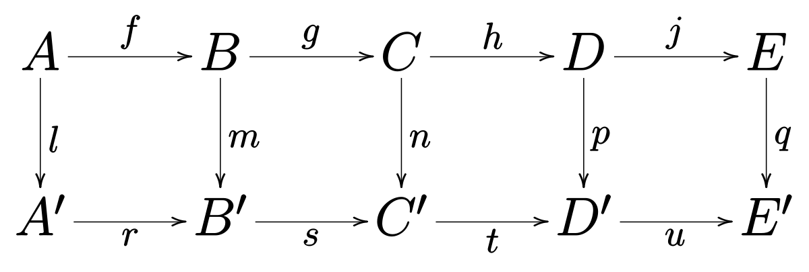

Samuel Eilenberg (izquierda) y Saunders Mac Lane introducieron la teoría de la categoría a mediados
del siglo XX, como parte de su trabajo en topología algebraica.
쮻e qué se trata la Teoría de Categorías?
Empecemos por lo que no es
No es una teoría para categorizar objetos matemáticos
No se limita al estudio de un solo tipo de estructura matemática
No es una teoría del todo
A breves rasgos, la teoría de categorías es...
una teoría matemática sobre estructura
un lenguaje para estudiar diferentes áreas de las matemáticas
"la matemática de las matemáticas" (Eugenia Cheng)
Motivación
Diferentes áreas tienen similitudes fundamentales
Teoría de Grupos
Topología
Álgebra Lineal
Antes que nada, necesitamos algunos conceptos preliminares
1
Los conjuntos no son suficientes
No toda colección de objetos que se puede describir con una propiedad es un conjunto
El problema es que tales descripciones pueden dar lugar a colecciones "muy grandes" para ser
consideradas conjuntos
1
Los conjuntos no son suficientes
Definición. Una clase es una colección de objetos matemáticos, que se puede
describir mediante una propiedad.
Todo conjunto es una clase, pero no al revés
Todo conjunto es elemento de algún otro conjunto, pero...
hay clases que no son elementos de ninguna otra clase
2
Terminología, notación y más terminología
Morfismo, mapa (mapping): una
función, grosso modo
$\longrightarrow$ representa un
morfismo
Objeto: cualquier cosa definida
formalmente
$\bigcirc$ representa un objeto
Diagrama: representación visual de
relaciones entre objetos por medio de flechas
2
Terminología, notación y más terminología
Un morfismo entre objetos $A$ y $B$: se denota
$$
f : A \to B\qquad\text{o} \qquad A \xrightarrow{f} B
$$
Ejemplo: un diagrama (conmutativo)

En la teoría de categorías, los diagramas conmutativos son análogos a las
ecuaciones en álgebra.
Ahora sí!
Categorías
Categorías
Definición. Una categoría $\mathscr{C}$ consiste de $4$ partes y $2$ reglas:
Una clase de objetos $\mathbf{ob}(\mathscr{C})$
Una clase de morfismos $\mathbf{hom}(A, B)$ por cada par de objetos $A, B \in
\mathbf{ob}(\mathscr{C})$
Composición: por cada $A, B, C\in \mathbf{ob}(\mathscr{C})$, existe un morfismo $$
\begin{array}{ccc}
\mathbf{hom}(B, C) \times \mathbf{hom}(A, B) &\to& \mathbf{hom}(A, C) \\
(g, f) &\mapsto& g \circ f
\end{array}
$$
Una identidad $1_A \in \mathbf{hom}(A, A)$ por cada $A\in \mathbf{ob}(\mathscr{C})$
Categorías
Definición. Una categoría $\mathscr{C}$ consiste de $4$ partes y $2$ reglas:
Asociatividad: para todo $f\in \mathbf{hom}(A, B)$, $g\in \mathbf{hom}(B, C)$, y $h\in
\mathbf{hom}(C, D)$ se cumple $$
(h\circ g) \circ f = h\circ (g\circ f)
$$
Para todo $f\in \mathbf{hom}(A, B)$, se tiene $$
f\circ 1_A = f = 1_B \circ f
$$
Categorías (en resumen)
Objetos
Morfismos
Composición
Identidades
La composición es asociativa
Propiedad de identidad
Ejemplos de Categorías
Ejemplos de Categorías
$\mathbf{Set}$
Ejemplos de Categorías
$\mathbf{Set}$
La categoría de todos los conjuntos
Objetos: conjuntos
Morfismos: funciones entre conjuntos
Composición: usual, $(f \circ g) (x) = f(g(x))$
Identidades: $1_A(x) = x, \forall x\in A$, por cada conjunto $A$
$\mathbf{Set}$
$\circ$ es asociativa: para todo $f\in \mathbf{hom}(A, B)$, $g\in
\mathbf{hom}(B, C)$, y $h\in\mathbf{hom}(C, D)$, tenemos
$$
\begin{align*}
((f\circ g) \circ h) (x) &= (f\circ g)(h(x))\\
&= f(g(h(x)))\\
&= f((g\circ h)(x))\\
&= (f\circ (g\circ h))(x)
\end{align*}
$$
La categoría de todos los espacios topologicos $(X, \mathcal{T})$
Objetos: espacios topologicos
Morfismos: funciones continuas
Composición: usual, $(f \circ g) (x) = f(g(x))$
Identidades: $1_A(x) = x$, por cada conjunto $A$
Ejemplos de Categorías
$(\mathbb{R}, \leq)$
Una categoría "del orden"
Objetos: números reales
Morfismos: un único $\varphi : x\to y$ t.q. $x\leq y$
Composición: $x\rightarrow{} y \rightarrow{} z$ da lugar $x\rightarrow{} z$
t.q. $x\leq z$
Identidades: $1_x = x$ para todo $x\in \mathbb{R}$. Claramente $x\leq x$
Las reglas de composición e identidades son inmediatas
Morfismos especiales
En una categoría $\mathscr{A}$, llamamos isomorfismo a cualquier morfismo $f: A\to B$, con
$A,B\in \mathscr{A}$, tal que existe $g: B \to A$ y este diagrama conmuta, i.e.,
$1_A = g \circ f$, y
$ 1_B = f\circ g $.
Escribimos $g= f^{-1}$
Functores
Functor
En teoría de categorías, siempre nos preguntamos por los mappings entre pares de objetos
Incluso si esos objetos son categorías
Un mapeo entre categorías se denomina functor
Functor
Definición. Sean $\mathscr{A}$ y $\mathscr{B}$ categorías. Un
functor $F : \mathscr{A} \to \mathscr{B}$ consiste de dos objetos que satisfacen
dos condiciones:
una función de objetos $\mathbf{ob}(\mathscr{A}) \to \mathbf{ob}(\mathscr{B})$, tal que
$X\mapsto F(X)$
una función de morfismos $\mathbf{hom}(X, Y) \to \mathbf{hom}(F(X), F(Y))$
Se respeta la composición: $$F(f\circ g) = F(f)\circ F(g)$$ siempre que $X\xrightarrow{g}
Y\xrightarrow{f} Z$ en $\mathscr{A}$
Se preservan las identidades: $F(1_A) = 1_{F(A)},\forall A\in \mathscr{A}$
Ejemplos de Functores
$\mathcal{I}: \mathscr{C} \to \mathscr{C}$
El functor identidad
Envía cada objeto y cada morfismo a sí mismo
Ejemplos de Functores
$U: \mathbf{Grp} \to \mathbf{Set}$
El functor que remueve la estructura
Si $G$ es un grupo, $U(G)$ es el conjunto del grupo, i.e.,
$ (G, \cdot) \mapsto G
$
Si $\varphi : G \to H$ es un homomorfismo de grupos, $U(\varphi)$ es la función
$\varphi$, i.e.,
$$
(G,\cdot) \xrightarrow{\varphi} (H, *) \quad\mapsto\quad G\xrightarrow{\varphi} H
$$
Transformaciones Naturales
Mapas entre functores
Transformaciones Naturales
En un principio, la motivación para introducir categorías y functores fue formalizar esta idea
Transformaciones Naturales
La noción de morfismos entre functores solo tiene sentido cuando los functores tienen el mismo
dominio y codominio.
$$
\mathscr{A} \xrightarrow{F,\,G} \mathscr{B}
$$
Queremos "transformar" un functor en otro pero manteniendo la estructura interna (del dominio y
codominio).
Transformaciones Naturales
Definición. Sean $\mathscr{A}, \mathscr{B}$ categorías y $F, G$ functores de $\mathscr{A}$ a $\mathscr{B}$. Una transformación natural $\alpha$ de $\mathscr{A}$ a $\mathscr{B}$ es una familia de morfismos $$\left(
F(A)\xrightarrow{\alpha_A} G(A)\right)_{A\in \mathscr{A}}$$ en $\mathscr{B}$ tal que si $f: A \to A'$
es un morfismo en $\mathscr{A}$, entonces el siguiente diagrama conmuta:
Transformaciones Naturales
Transformaciones Naturales
Observaciones
Esta definición se dió de tal manera que por cada $A\xrightarrow{f} A'$ en $\mathscr{A}$ se pueda contruir exactamente un morfismo $F(A) \to G(A')$ en $\mathscr{B}$.
Dicho morfismo es la diagonal del diagrama anterior
Ejemplo
$\left( 1_{F(A)}\right)_{A\in \mathscr{C}}$
La identidad: una transformación natural de $F$ a sí mismo
para cualquier par de categorías $\mathscr{C}$ y $\mathscr{D}$
y cualquier functor $F$ de $\mathscr{C}$ a $\mathscr{D}$
Ejemplo
$\mathrm{\det}$
Sea \(\mathcal{G} \mathcal{L}_n\) el funtor de $\mathrm{CRing}$ a $\mathrm{Grp}$ tal que cada \(R\in \mathrm{CRing}\) se mapea por \(\mathcal{G} \mathcal{L}_n\) al grupo \(GL_n(R)\) de matrices invertibles \(n \times n\) con entradas de \(R\).
Para cada homomorfismo de anillos \(f: R \rightarrow S\), tenemos que \(\mathcal{G} \mathcal{L}_n(f)\) es el mapeo de matrices que aplica \(f\) a cada entrada de la matriz
Dado que \(f\) envía el elemento neutro 1 a 1, se sigue que \(\mathcal{G} \mathcal{L}_n(f)\) envía matrices invertibles a matrices invertibles
Ejemplo
$\mathrm{\det}$
Sea \(\mathcal{G}\) el funtor de $\mathrm{CRing}$ a $\mathrm{Grp}$ que mapea cada anillo \(R\) a su grupo de unidades \(R^{\times}\), y cada homomorfismo de anillos \(f\) a su restricción a los grupos de unidades (también denotado por \(f\)).
La determinante es una transformación natural de \(\mathcal{G} \mathcal{L}_n\) a \(\mathcal{G}\) porque la determinante está definida por el mismo polinomio para todos los anillos, de modo que el siguiente diagrama es conmutativo: